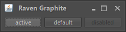
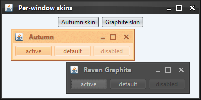

|
import java.awt.FlowLayout;
import java.awt.event.ActionEvent;
import java.awt.event.ActionListener;
import javax.swing.*;
import org.pushingpixels.substance.api.SubstanceLookAndFeel;
import org.pushingpixels.substance.api.SubstanceSkin;
import org.pushingpixels.substance.api.skin.*;
/**
* Test application that shows the use of the
* {@link SubstanceLookAndFeel#SKIN_PROPERTY} client property.
*
* @author Kirill Grouchnikov
* @see SubstanceLookAndFeel#SKIN_PROPERTY
*/
public class SkinProperty extends JFrame {
/**
* Creates the main frame for <code>this</code> sample.
*/
public SkinProperty() {
super("Per-window skins");
this.setLayout(new FlowLayout());
JButton autumnSkin = new JButton("Autumn skin");
autumnSkin.addActionListener(new ActionListener() {
@Override
public void actionPerformed(ActionEvent e) {
SwingUtilities.invokeLater(new Runnable() {
@Override
public void run() {
openSampleFrame(new AutumnSkin());
}
});
}
});
this.add(autumnSkin);
JButton ravenGraphiteSkin = new JButton("Graphite skin");
ravenGraphiteSkin.addActionListener(new ActionListener() {
@Override
public void actionPerformed(ActionEvent e) {
SwingUtilities.invokeLater(new Runnable() {
@Override
public void run() {
openSampleFrame(new GraphiteSkin());
}
});
}
});
this.add(ravenGraphiteSkin);
this.setSize(400, 200);
this.setLocationRelativeTo(null);
this.setDefaultCloseOperation(JFrame.EXIT_ON_CLOSE);
}
/**
* Opens a sample frame under the specified skin.
*
* @param skin
* Skin.
*/
private void openSampleFrame(SubstanceSkin skin) {
JFrame sampleFrame = new JFrame(skin.getDisplayName());
sampleFrame.setLayout(new FlowLayout());
JButton defaultButton = new JButton("active");
JButton button = new JButton("default");
JButton disabledButton = new JButton("disabled");
disabledButton.setEnabled(false);
sampleFrame.getRootPane().setDefaultButton(defaultButton);
sampleFrame.add(defaultButton);
sampleFrame.add(button);
sampleFrame.add(disabledButton);
sampleFrame.setVisible(true);
sampleFrame.pack();
sampleFrame.setLocationRelativeTo(null);
sampleFrame.setDefaultCloseOperation(JFrame.DISPOSE_ON_CLOSE);
sampleFrame.getRootPane().putClientProperty(
SubstanceLookAndFeel.SKIN_PROPERTY, skin);
SwingUtilities.updateComponentTreeUI(sampleFrame);
sampleFrame.repaint();
}
/**
* The main method for <code>this</code> sample. The arguments are ignored.
*
* @param args
* Ignored.
*/
public static void main(String[] args) {
JFrame.setDefaultLookAndFeelDecorated(true);
SwingUtilities.invokeLater(new Runnable() {
public void run() {
SubstanceLookAndFeel.setSkin(new BusinessBlackSteelSkin());
new SkinProperty().setVisible(true);
}
});
}
}
The screenshot below shows application frame under the Business Black Steel
skin:

The screenshot below shows another frame launched in the same application
with this client property set to AutumnSkin:
The screenshot below shows a third frame launched in the same application
with this client property set to RavenGraphiteSkin:

And here is a screenshot of all three application frames showing multiple
skins being used on different root panes:

|